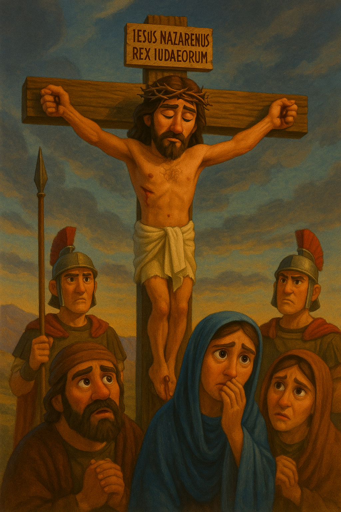
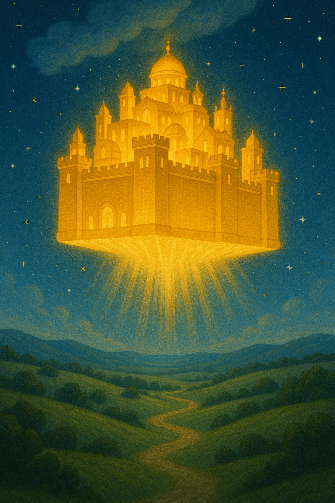

El Plan Eterno de Dios
La historia humana no es una serie de eventos aleatorios, sino la progresiva revelación de un plan divino perfectamente concebido desde la eternidad. Exploremos las fases de este majestuoso diseño a través de las Escrituras.
El Diseño Eterno
Antes de la fundación del mundo, en la eternidad pasada, Dios ya había concebido Su plan redentor perfecto. Este plan no fue una respuesta reactiva a la caída del hombre, sino un propósito establecido antes de la creación del tiempo mismo.
La cruz no fue un "Plan B" divino, sino el centro del plan eterno de Dios (Apocalipsis 13:8).
La predestinación divina precede a la creación y abarca tanto la elección de las personas como los medios para su salvación.
El propósito eterno incluye la manifestación de todos los atributos divinos, incluyendo justicia y misericordia (Romanos 9:22-23).
La Creación y la Caída
Dios creó un mundo perfecto como escenario para la revelación de Su plan. El hombre, creado a Su imagen y semejanza, recibió el libre albedrío y con él la posibilidad de rebelión. La caída no tomó a Dios por sorpresa, sino que se convirtió en el telón de fondo para la manifestación de Su gracia.
La creación exhibe el poder, sabiduría y bondad de Dios (Romanos 1:20).
La caída introdujo el pecado y la muerte en el mundo, afectando a toda la creación (Romanos 5:12).
La primera promesa de redención (Protoevangelio) se da inmediatamente después de la caída (Génesis 3:15).

La Preparación Progresiva
A través de la historia del Antiguo Testamento, Dios preparó meticulosamente el escenario para la venida del Redentor. El llamado de Abraham, la formación de Israel, la entrega de la Ley, el establecimiento del sistema sacrificial y las profecías mesiánicas fueron todos elementos cruciales en esta fase preparatoria.
El pacto abrahámico sentó las bases para la nación a través de la cual vendría el Mesías (Génesis 12:1-3).
La Ley reveló la santidad de Dios y la pecaminosidad del hombre, demostrando la necesidad de un Salvador (Romanos 3:20).
Los profetas proporcionaron detalles cada vez más específicos sobre la venida del Mesías, su persona y su obra (Isaías 53).
La Encarnación Redentora
En el "cumplimiento del tiempo", Dios envió a su Hijo, nacido de mujer y bajo la ley. La encarnación de Cristo representa el punto central de la historia humana. A través de su vida perfecta, muerte expiatoria y resurrección victoriosa, Jesús cumplió el plan redentor previsto desde la eternidad.
La encarnación unió la deidad y la humanidad perfectas en la persona de Cristo (Juan 1:14).
La cruz satisfizo simultáneamente la justicia y la misericordia divinas (Romanos 3:26).
La resurrección validó la eficacia del sacrificio de Cristo y selló la victoria sobre el pecado y la muerte (1 Corintios 15:17).

La Era de la Iglesia
Tras la ascensión de Cristo y el descenso del Espíritu Santo en Pentecostés, comenzó la era de la Iglesia. Durante este período, Dios está reuniendo un pueblo para su nombre de entre todas las naciones, edificando el cuerpo de Cristo y preparándolo como novia para el regreso del Esposo celestial.
La Iglesia es el misterio escondido en los siglos pasados pero revelado ahora (Efesios 3:4-6).
La misión principal de la Iglesia es la proclamación del evangelio a todas las naciones (Mateo 28:19-20).
El Espíritu Santo capacita a la Iglesia para su misión y la prepara para la venida del Señor (Hechos 1:8).
La Consumación del Reino
El plan divino culminará con el regreso glorioso de Cristo, la resurrección final, el juicio y el establecimiento definitivo del Reino eterno. Todos los propósitos de Dios convergen en esta gloriosa consumación, cuando la creación será liberada de la esclavitud de corrupción y Dios será todo en todos.
El regreso de Cristo vindicará Su señorío sobre toda la creación (Filipenses 2:10-11).
La creación restaurada reflejará perfectamente la gloria de Dios (Romanos 8:19-22).
La comunión eterna entre Dios y Su pueblo redimido será plena y sin obstáculos (Apocalipsis 21:3).

El Propósito Supremo
Detrás del plan divino para la historia humana se encuentra un propósito supremo: la manifestación de la gloria de Dios. Cada fase revela diferentes facetas de Su carácter y atributos, culminando en la perfecta revelación de Su gloria en la eternidad.
Todo el plan divino converge en este propósito supremo: "De él, y por él, y para él, son todas las cosas. A él sea la gloria por los siglos. Amén." (Romanos 11:36)
Las Dispensaciones Divinas
A lo largo de la historia, Dios ha revelado Su voluntad y ha interactuado con la humanidad a través de diferentes administraciones o dispensaciones, probando al hombre bajo distintas condiciones y revelando progresivamente Su plan redentor.
Atributos Divinos en el Plan Eterno
El plan eterno de Dios revela y magnifica Sus gloriosos atributos, demostrando cómo cada uno de ellos opera en perfecta armonía con los demás para lograr Sus propósitos.
Soberanía
Dios gobierna absolutamente sobre toda la creación y ejecuta infaliblemente todos Sus designios. Nada ocurre fuera de Su control o permisivo decreto. El plan divino avanza inexorablemente según Su perfecta voluntad.
"Y sabemos que a los que aman a Dios, todas las cosas les ayudan a bien, esto es, a los que conforme a su propósito son llamados." (Romanos 8:28)
Omnisciencia
Dios conoce perfectamente todas las cosas, pasadas, presentes y futuras. Su plan no está sujeto a revisión por información insuficiente o contingencias imprevistas. Prevé y dispone todas las circunstancias para el cumplimiento de Sus propósitos.
"Porque mis pensamientos no son vuestros pensamientos, ni vuestros caminos mis caminos, dijo Jehová. Como son más altos los cielos que la tierra, así son mis caminos más altos que vuestros caminos, y mis pensamientos más que vuestros pensamientos." (Isaías 55:8-9)
Inmutabilidad
Dios no cambia en Su ser, atributos, propósitos o promesas. Su plan, establecido desde la eternidad, permanece inalterado. La progresiva revelación de ese plan no implica cambios en él, sino despliegues de lo ya determinado.
"Porque yo Jehová no cambio; por esto, hijos de Jacob, no habéis sido consumidos." (Malaquías 3:6)
Justicia y Santidad
Dios es perfectamente santo y justo, y no puede tolerar el pecado. Su plan redentor satisface plenamente las demandas de Su santidad mientras provee salvación para los pecadores, a través del sacrificio expiatorio de Cristo.
"Al que no conoció pecado, por nosotros lo hizo pecado, para que nosotros fuésemos hechos justicia de Dios en él." (2 Corintios 5:21)
Amor y Gracia
El amor de Dios es la motivación fundamental de Su plan redentor. A pesar de la rebelión humana, Dios proveyó, a un costo infinito para Sí mismo, el camino para la reconciliación con Sus criaturas caídas.
"Porque de tal manera amó Dios al mundo, que ha dado a su Hijo unigénito, para que todo aquel que en él cree, no se pierda, mas tenga vida eterna." (Juan 3:16)
Sabiduría
La sabiduría de Dios se manifiesta en la forma en que Su plan reconcilia atributos aparentemente contradictorios como la justicia y la misericordia. La cruz es la expresión suprema de esta sabiduría divina.
"¡Oh profundidad de las riquezas de la sabiduría y de la ciencia de Dios! ¡Cuán insondables son sus juicios, e inescrutables sus caminos!" (Romanos 11:33)
Fundamentos Bíblicos
El plan divino está firmemente arraigado en las Escrituras. Estos pasajes clave iluminan diferentes aspectos del propósito eterno de Dios.
El Propósito Eterno
"Bendito sea el Dios y Padre de nuestro Señor Jesucristo, que nos bendijo con toda bendición espiritual en los lugares celestiales en Cristo, según nos escogió en él antes de la fundación del mundo, para que fuésemos santos y sin mancha delante de él, en amor habiéndonos predestinado para ser adoptados hijos suyos por medio de Jesucristo, según el puro afecto de su voluntad."
Efesios 1:3-5El Plan Redentor
"Sabiendo que fuisteis rescatados de vuestra vana manera de vivir, la cual recibisteis de vuestros padres, no con cosas corruptibles, como oro o plata, sino con la sangre preciosa de Cristo, como de un cordero sin mancha y sin contaminación, ya destinado desde antes de la fundación del mundo, pero manifestado en los postreros tiempos por amor de vosotros."
1 Pedro 1:18-20El Cumplimiento del Tiempo
"Pero cuando vino el cumplimiento del tiempo, Dios envió a su Hijo, nacido de mujer y nacido bajo la ley, para que redimiese a los que estaban bajo la ley, a fin de que recibiésemos la adopción de hijos."
Gálatas 4:4-5La Administración Divina
"Dándonos a conocer el misterio de su voluntad, según su beneplácito, el cual se había propuesto en sí mismo, de reunir todas las cosas en Cristo, en la dispensación del cumplimiento de los tiempos, así las que están en los cielos, como las que están en la tierra."
Efesios 1:9-10La Consumación del Plan
"Y vi un cielo nuevo y una tierra nueva; porque el primer cielo y la primera tierra pasaron, y el mar ya no existía más. Y yo Juan vi la santa ciudad, la nueva Jerusalén, descender del cielo, de Dios, dispuesta como una esposa ataviada para su marido. Y oí una gran voz del cielo que decía: He aquí el tabernáculo de Dios con los hombres, y él morará con ellos; y ellos serán su pueblo, y Dios mismo estará con ellos como su Dios."
Apocalipsis 21:1-3La Manifestación de Su Gloria
"Porque de él, y por él, y para él, son todas las cosas. A él sea la gloria por los siglos. Amén."
Romanos 11:36Nuestra Respuesta al Plan Divino
Comprender el plan eterno de Dios no es un mero ejercicio académico; debe transformar nuestra perspectiva y vida diaria. Debemos responder con asombro ante la sabiduría divina, gratitud por nuestra inclusión en Su propósito, y fidelidad en cumplir nuestro papel en Su plan.
Mientras la historia avanza inexorablemente hacia su culminación predeterminada, los creyentes encontramos consuelo y esperanza en saber que nada ocurre por casualidad. Todo evento, sea gozoso o doloroso, se integra perfectamente en el tejido del propósito eterno de Dios para la manifestación de Su gloria y el bien de Sus hijos.
Regresar a Introducción